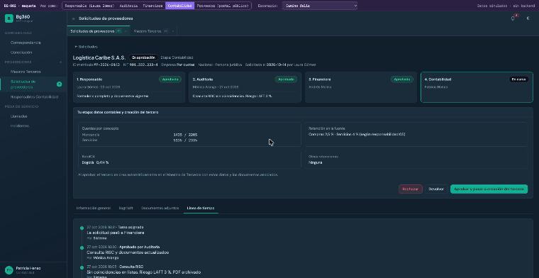

Próximo proyecto · BG360
Maestro de proveedores
El proveedor se inscribe solo con un enlace, sube sus documentos y firma el Sagrilaft. La solicitud pasa por cuatro aprobaciones hasta crear el tercero en BG360.
Responsable→Auditoría→Financiera→Contabilidad
Maqueta lista para aprobar

